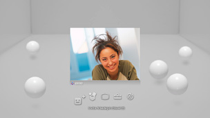
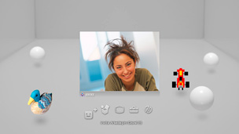

Arkadaşlar > Sesli / görüntülü sohbet > Sesli / görüntülü sohbet başlatma veya sohbetten çıkma
Sesli / görüntülü sohbet başlatma veya sohbetten çıkma
Bu özelliği kullanmak için, sistem yazılımını güncellemeniz gerekebilir.
Arkadaşlar listenizdeki kişilerle sesli / görüntülü sohbet yapabilirsiniz. Sesli sohbet yapmak için, bir ses giriş / çıkış cihazı (kulaklık gibi, ayrıca satılır) gerekir. Görüntülü sohbet için, bir USB kameraya (ayrıca satılır) da ihtiyacınız olacaktır.
Sesli / görüntülü sohbet başlatma
1. |
|
|---|---|
2. |
 |
3. |
Ekranda görüntülenen menüden |
4. |
Bir mesaj yazın ve sonra [Gönder] öğesini seçin.  Kişi sohbete katılırsa, görüntüsü görüntülenir ve sesli / görüntülü sohbet başlar. |
 (Arkadaşlar) >
(Arkadaşlar) >  (Yeni Sohbet Başlat) öğesini seçin.
(Yeni Sohbet Başlat) öğesini seçin. (Sesli Sohbet/Görüntülü Sohbet) öğesini seçin.
(Sesli Sohbet/Görüntülü Sohbet) öğesini seçin. (Arkadaşını Davet Et) öğesini seçin.
(Arkadaşını Davet Et) öğesini seçin.İpuçları
- PS3™ sistemi sesli / görüntülü sohbeti destekler. Oyun içi sohbet gibi ek sohbet seçenekleri oyun yazılımında bulunabilir. Ayrıntılar için, kullanılan yazılımla birlikte verilen yönergelere bakın.
- Sohbet edebilmek için PSNSM oturumu açmanız gerekir.
- Sohbet etmek için birden fazla arkadaşı da davet edebilseniz de yalnızca ekranda seçtiğiniz ilk beş Arkadaşın avatarı sohbet odasında görüntülenir.
- Bir sohbet odasına en fazla altı kişi katılabilir.
- Kullanım sınırlamaları ayarlanırsa sesli / görüntülü sohbet özelliği kullanılamaz. Ebeveyn kontrolü ayarları hakkında bilgi için, bu kılavuzdaki [XMB™ menüsü hakkında] > [Ebeveyn kontrolü ayarlarını kullanma] konusuna bakın.
- Uyumlu bir USB kulaklık / Bluetooth® kulaklık / USB Kamera (EyeToy™) / PlayStation®Eye / PS3™ sisteminde USB video sınıfı (UVC) ile uyumlu USB kamera kullanabilirsiniz.
- Bir USB hub kullanarak bir USB kamerayı bağlarken, USB 2.0 destekleyen bir hub kullanın. USB 2.0 desteklemeyen bir hub kullanıldığında, görüntü bozulması oluşabilir veya görüntü görüntülenmeyebilir.
- Desteklenen çevre aygıtları ve kullanım yönergeleri hakkında bilgi için, çevre aygıtlarının satıldığı bayiye başvurun.
Sohbet odasından ayrılma (sesli / görüntülü sohbetten çıkma)
Sohbet sırasında, kontrol panelinden  (Ayrıl) öğesini seçin.
(Ayrıl) öğesini seçin.
İpucu
Sesli / görüntülü sohbeti başlatan kişi ayrılırsa, sohbet odası kapanacaktır.